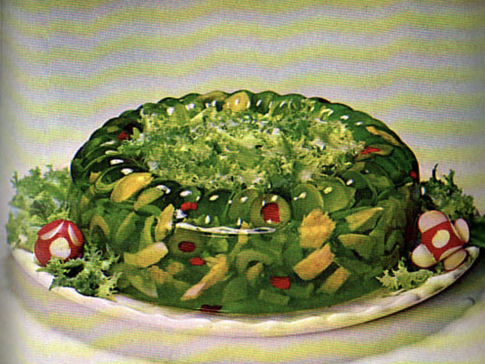

Ring-Around-The-Tuna

A beautiful jewel-like entree for your luncheon or buffet table.
Ingredients
- 1 package (3oz) Jell-O Lime Gelatin
- 1/4 tsp salt
- 1 cup boiling water
- 3/4 cup cold water
- 2 tbsp vinegar
- 2 tsp grated onion
- 1/2 cup diced cucumber
- 1/2 cup diced celery
- 2 tbsp chopped pimiento peppers
- 2 tbsp sliced stuffed olives
- 1 can (7 oz) tuna, drained and flaked
Steps
- Dissolve Jell-O Gelatin and salt in boiling water. Add cold water, vinegar, and onion. Chill until very thick.
- Stir in remaining ingredients. Pour into individual ring molds or a 1-quart ring mold. Chill until firm.
- Unmold on crisp salad greens. If desired, serve with additional tuna and top salads with mayonnaise. Makes 3 2/3 cups, or about 4 entree servings.